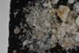

|
|
(For further information on spectroscopy, see:
http://speclab.cr.usgs.gov)
TITLE: Opal TM8896 (Hyalite) DESCRIPT
DOCUMENTATION_FORMAT: MINERAL
SAMPLE_ID: TM8896
MINERAL_TYPE: Tectosilicate
MINERAL: Opal
FORMULA: SiO2*nH2O
FORMULA_HTML: SiO2•nH2O
COLLECTION_LOCALITY: Beaver Co., UT.
ORIGINAL_DONOR: Jim Piper
CURRENT_SAMPLE_LOCATION: USGS Denver Spectroscopy Laboratory
ULTIMATE_SAMPLE_LOCATION: USGS Denver Spectroscopy Laboratory
SAMPLE_DESCRIPTION:
IMAGE_OF_SAMPLE:

END_SAMPLE_DESCRIPTION.
XRD_ANALYSIS:
40 kV - 30 mA, 6.5-9.5 keV
References: Tada and Iijima (1983), Isaacs and others (1983)
Found: mixture of opal-A and opal-CT
Comment: A good opal. Broad maximum centered at 22 degrees, very poor
degree of crystallinity. Opal-CT has a very weak reflection at
position of quartz (101). I have no basis for estimating the relative
proportions of these the two forms of opal - rather, they form a progression as
longer-range order develops.
J.S. Huebner, J Pickrell, T. Schaefer, unpublished data, written communication, USGS, Reston, VA (1994)
40 kV - 30 mA, 6.5-9.5 keV
File: opal8896.mdi (smear on quartz plate)
References: Isaacs and others (1983); Tada and Ijima (1983)
Found: opaline phase
Comment: There is only one very weak and broad peak, in the position of the
usually intense and sharp quartz (101) reflection at 3.35 Angstroms. The observed
broad rise centered around 4.00 Angstroms is consistent with opaline silica.
Possibly significant maxima on the broad rise are in positions of cristobalite
and tridymite, but there are no corresponding peaks at smaller interplanar spacing's.
The material is most likely transitional between opal-A and opal-CT states.
END_XRD_ANALYSIS.
COMPOSITIONAL_ANALYSIS_TYPE: None # XRF, EM(WDS), ICP(Trace), WChem
COMPOSITION_TRACE: None
COMPOSITION_DISCUSSION:
None
END_COMPOSITION_DISCUSSION.
MICROSCOPIC_EXAMINATION:
END_MICROSCOPIC_EXAMINATION.
SPECTROSCOPIC_DISCUSSION:
END_SPECTROSCOPIC_DISCUSSION.
SPECTRAL_PURITY: 1a2a3a4_ # 1= 0.2-3, 2= 1.5-6, 3= 6-25, 4= 20-150 microns
| LIB_SPECTRA_HED: | where | Wave Range | Av_Rs_Pwr | Comment |
|---|---|---|---|---|
| LIB_SPECTRA: | splib04a r 3755 | 0.2-3.0µm | 200 | g.s.= |
| LIB_SPECTRA: | splib05a r 5256 | 0.2-3.0µm | 200 | g.s.= |
| LIB_SPECTRA: | splib06a r 17216 | g.s.= | ||
| LIB_SPECTRA: | splib06a r 17228 | g.s.= |
{kind=link}